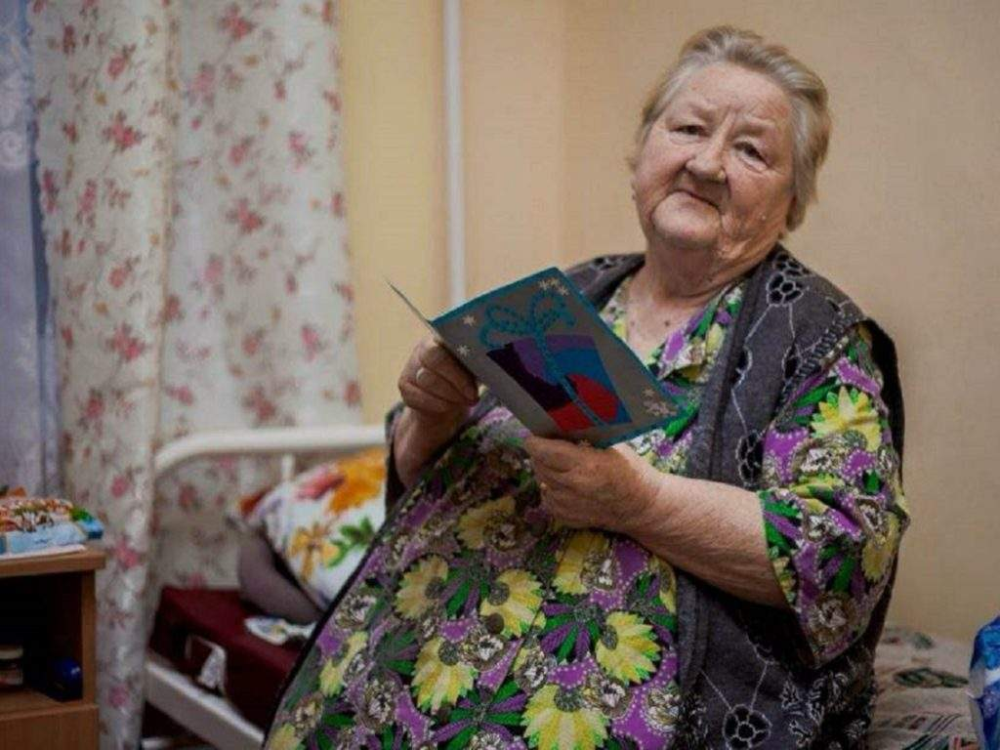
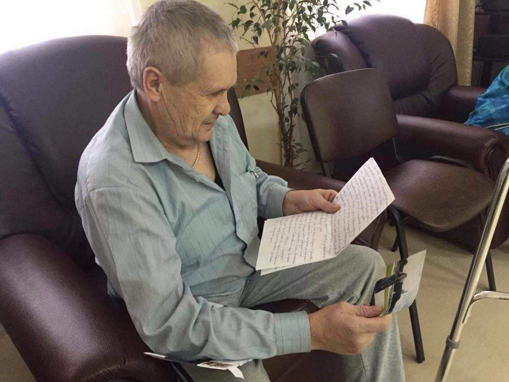
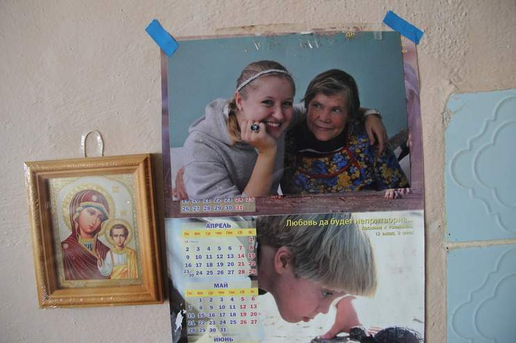
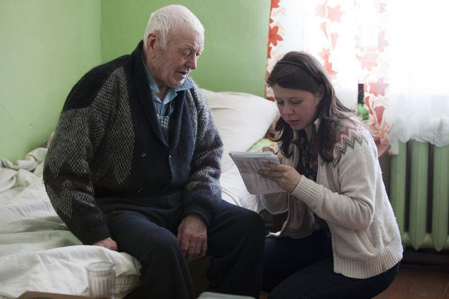
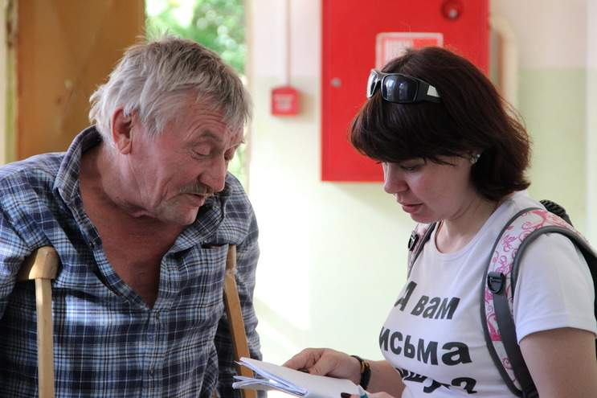
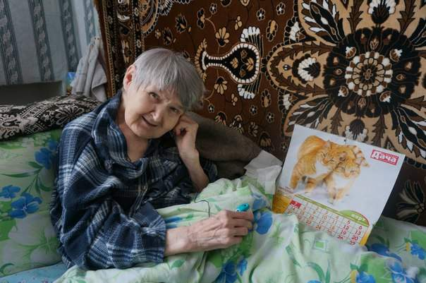

Программа «Внуки по переписке»






Каждому из нас хочется чувствовать себя нужным и любимым, общаться и делиться своими радостями и проблемами,
получать поддержку и давать советы тем, кто в них нуждается. Наши бабушки и дедушки — не исключение.
Подробно о переписке, ее правилах и о том, как ее начать, вы можете прочитать в разделе «Волонтерам». Каждый из
вас, находясь в любом уголке земного шара, может написать нашему руководителю программы, Людмиле Фильчуковой
l.filchukova@starikam.org, либо координатору программы, Катерине Зайцевой mail@starikam.org, и принять участие в
программе, написать письма бабушкам и дедушкам, а также выступить координатором переписки других участников.
Мы смогли изменить жизнь уже более 5000 стариков, которые нашли своих «внуков по переписке», и не собираемся
останавливаться на достигнутом!
Если постоянная переписка пока не для вас, вы можете принять участие в поздравлении наших подопечных с праздниками
(День рождения, Новый год, 8 марта, 9 мая и т.д.) отправив открытку по почте.
Всю информацию можно получить у Александры Кузьмичевой (a.kuzmicheva@starikam.org) или на наших страницах в
соцсетях.
Здесь нет ограничений по количеству поздравляющих и поздравляемых. Вы можете осчастливить сразу нескольких человек,
поздравить их открыткой.
Поздравление с праздником не влечет за собой обязанности продолжать переписку, более того, почти у всех бабушек и
дедушек уже есть дистанционные «внуки».
Мы просим не отправлять подарков и посылок: во-первых, зависть соседей испортит адресату весь
праздник. Во-вторых, пожилые люди скорее смущаются, даже пугаются посылок от незнакомых людей, чем радуются им. Так
что даже постоянным бабушкам по переписке посылки лучше отправлять после 3-4 писем.
Объявления об отправке открыток к ближайшему празднику мы публикуем в социальных сетях фонда. Вы также можете прямо
здесь написать координатору, сколько открыток на ближайший праздник (обычно это дни рождения ближайшего месяца, в
декабре — Новый год, в феврале — 23 февраля и затем 8 марта, в апреле — День Победы и Пасха) вы готовы отправить.
Открытки нужно отправлять Почтой России примерно за 7-10 дней до знаменательной даты, будь то день рождения или
Новый год. Лучше писать на конверте свой обратный адрес: бабушки отвечают редко, но заведомое отсутствие такой
возможности обижает многих.
Пожалуйста, не дублируйте просьбу прислать адреса в разных социальных сетях и на сайте фонда: ваши письма получат
разные координаторы, и вы получите несколько порций адресов.